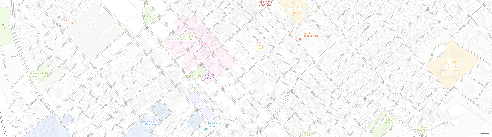
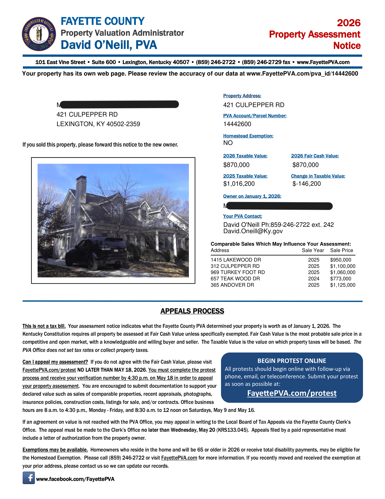
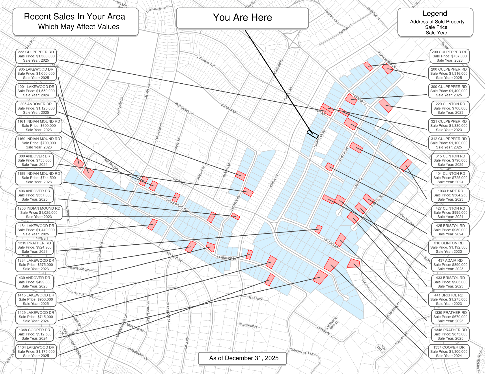
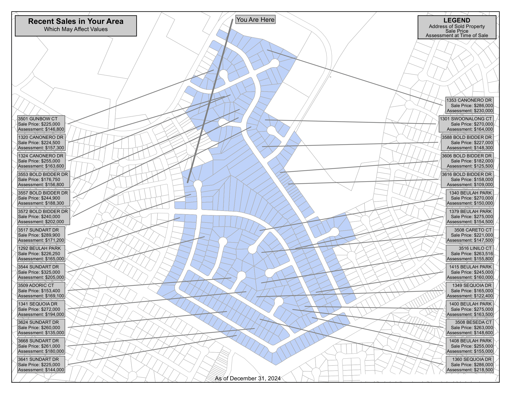
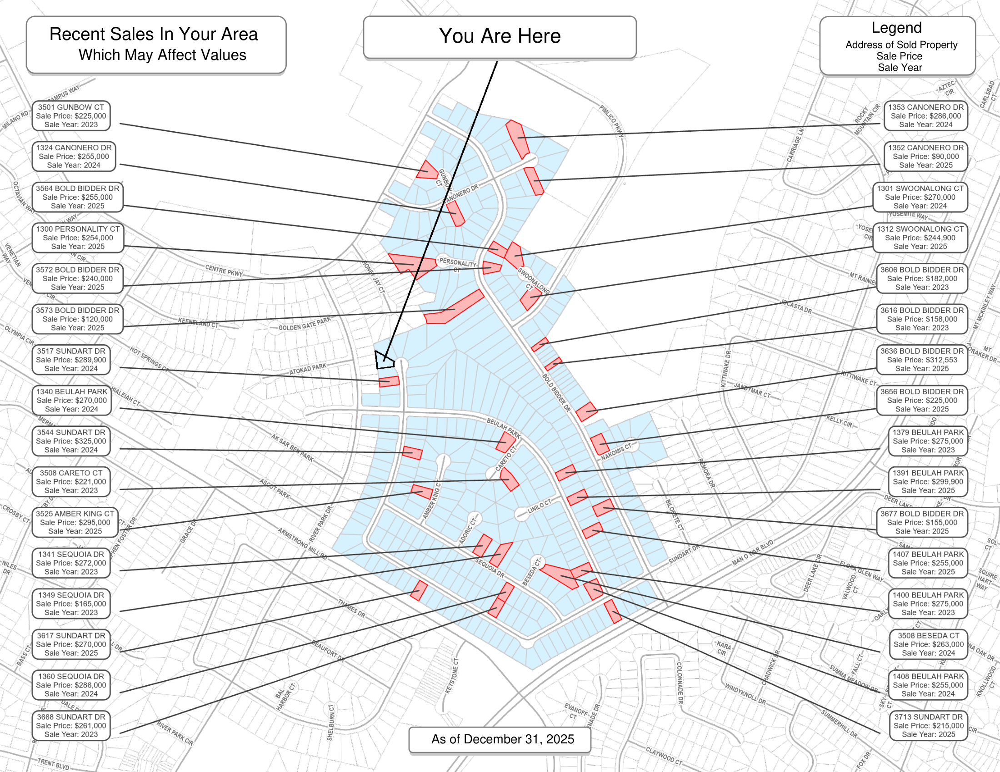

Sarah Roach
GIS Professional | Spatial Data, Automation & Cartography
About Me
I am a GIS professional specializing in cartography, spatial data management, and workflow automation, with experience spanning local government property assessment, transit systems, and public-facing GIS products. I am passionate about creating maps and geospatial tools that communicate complex information clearly, balancing technical accuracy with strong visual design and usability.
I believe effective cartography plays an important role in the credibility and accessibility of data. Whether developing public-facing transit maps, countywide parcel workflows, or automated GIS tools, my goal is to transform complex spatial information into products that are intuitive, visually polished, and meaningful to a wide range of users.
My work combines cartographic design with technical problem-solving, including GIS automation, Python scripting, spatial data management, and process improvement in ArcGIS Pro. I am committed to continuously improving my skills, exploring new geospatial technologies, and building practical GIS solutions that create measurable real-world impact.
Assessment Notices Python Tool, 2026
At the Fayette County Property Valuation Administrator’s Office, I redesigned and modernized the workflow used to generate annual property assessment notices for taxpayers across the county. Assessment notices are mailed to property owners whose assessed value changed and are used to explain the reassessment, provide contact information for questions, outline the appeals/protest process, and give supporting information behind the valuation. A key component of the notice is a comparable sales analysis, which helps taxpayers understand how nearby property sales influenced the assessed value of their home or property.
I rebuilt and expanded a legacy ArcMap-based process into a Python-driven tool in ArcGIS Pro that automates the creation of these notices at scale. The tool pulls together multiple GIS and tabular data sources, including parcel geometry, ownership information, valuation records, neighborhood sales, and parcel photography, to generate customized PDF notice packets for each property. It automatically creates parcel-specific maps showing the subject parcel, neighborhood context, and recent comparable sales, while also filling in assessment data and taxpayer information into a standardized report template. The workflow can process a single parcel, a neighborhood, or large parcel lists depending on production needs.
A major focus of the project was reliability and speed during high-volume production. I improved map quality, fixed recurring issues from the previous tool, and implemented performance optimizations to reduce processing time for repeated neighborhood layouts. The completed system successfully generated over 100,000 assessment notices during annual production with no major tool failures, helping staff meet strict deadlines while reducing manual work and improving consistency in taxpayer-facing materials.


Legacy ArcMap Map

Redesigned ArcGIS Pro Map

❮
❯
Lextran Winter Weather Emergency Shelter Transit Access Map, 2025
During my time at Lextran, I developed public-facing GIS products to improve rider access to transit information and community resources. This project focused on creating a winter weather emergency shelter map to help riders understand which shelters were accessible via public transportation during severe weather events.
Rather than relying on a prebuilt basemap or existing template, I assembled the map from the ground up by collecting, organizing, and integrating multiple spatial datasets. I gathered and compiled route data, shelter locations, roadway and contextual map layers, and designed the cartographic layout to clearly communicate route access and connectivity. The final product was designed to be intuitive and easy to read for the general public during emergency situations, balancing geographic accuracy with accessibility and visual clarity.
This project was part of broader GIS and transit planning work where I regularly updated route maps for service changes, maintained transit-related spatial information, and created maps for brochures, public outreach, and rider resources..
PVA Field Map for Assessors, 2023
I identified an opportunity to enhance the efficiency and accuracy of field mapping processes. The existing field map, with only three layers—parcels, roads, and building outlines—provided a limited representation of the real-world environment. With their limited resources out of the office, I wanted to make a field map that more accurately reflected what was on-the-ground and provide much needed context to assessors. I used map layers from the Lexington-Fayette Urban County Government (LFUCG), University of Kentucky, KYGEONET, and Openstreetmap, as well as creating/updating layers using aerial imagery when possible. Originally, the parcel layer would only get updated a few times a year and had to be created from scratch every time. Through a redesign of the workflow, the tablet maps are now updated twice a month or as needed, and the completed basemap map document is now accessible on a shared space on the network, ready to be edited. This transformation in the field mapping process not only increased the accuracy of assessments but also significantly improved operational efficiency. The implementation of a more dynamic and regularly updated field map has proven instrumental in eliminating the challenges previously faced, ensuring that assessors have the most current and relevant information at their fingertips. My commitment to optimizing GIS workflows extends beyond creating visually compelling maps to addressing practical challenges within the organization, facilitating a seamless integration of GIS technology into daily operations.

PVA Assessor NBHD Maps, 2023
These maps were specifically designed for internal use among the Property Valuation Administrator's (PVA) property assessors, offering them a powerful tool during the demanding assessment season. Recognizing the assessors' need for a more comprehensive understanding of the neighborhoods and individual parcels they were assigned to; I created these maps to act as a reference tool. The maps not only feature fundamental layers like FEMA floodplains and recent parcel sales and their types, but also feature layers such as religious exemption parcels, water bodies, parks, golf courses, cemeteries, and schools. This holistic approach provides assessors with a nuanced perspective of their assigned areas, providing them with essential contextual information crucial for accurate property appraisals. In the ever-evolving housing market, these maps play a pivotal role in enabling assessors to make informed decisions, ultimately minimizing the likelihood of assessment protests in the future. The enhanced understanding of a neighborhood dynamics and how that relates to individual parcel valuation facilitates more accurate and defensible appraisals, contributing to the overall efficiency and effectiveness of the PVA's operations. As a GIS professional, I am dedicated to creating solutions that directly address the unique needs of users, making their day-to-day responsibilities easier.
Smiley Pete's 'The State of Local Real Estate 2023: By the Numbers', 2023
This was a mapping project between the PVA and SmileyPete, a local Lexington KY magazine, for their annual real estate edition. Unlike previous years, where maps only included two layers, parcel sales and roads, I created detailed maps that paint a holistic picture of each neighborhood. These maps include essential data like schools, parks, universities, and more, giving a well-rounded view of each area. The goal was to make these maps user-friendly, allowing residents to easily spot their own neighborhood by recognizing familiar areas and features. By mapping sales statistics for six key neighborhoods, highlighting trends and emerging patterns, the aim is to give SmileyPete's readers a clear insight into the changing real estate scene in some of the city's most popular neighborhoods. Through this project, we want to offer more than just surface-level info, providing a simple yet comprehensive visual guide. These maps are tools for readers; they're a way to understand the dynamic nature of our city's neighborhoods in a straightforward manner.
UK Senior Capstone Project/ESRI Map Book, 2022
For my undergraduate Geography senior capstone project at the University of Kentucky, I wanted to pull from my personal experiences growing up in South Louisville near heavy industry. As a kid, I would walk to the bus stop in the morning and sometimes smell the uniquely weird odor from the next-door factories. I wondered what the source was, and what could it possibly be doing to the health of my neighborhood. Using data from the EPA, CDC, and Census Bureau, I explored the connection between historical demographic, economic, and housing patterns, like redlining in Louisville's west end neighborhoods, and the proximity to polluting facilities. By using a bivariate classification scheme, I was able to show multiple critical data sets and types simultaneously, illuminating the complex web of factors contributing to environmental injustice and health disparities in Louisville's marginalized communities. In 2022, I attended the ESRI User Conference in San Diego through my job at the Fayette County Property Valuation Administration. I submitted this project, and it was selected to be used in ESRI's 2023 Map Book (Volume 38). Through projects like these, my goal is to bridge the gap between data and understanding, presenting crucial issues like environmental injustice in a visually compelling, easily digestible, and attractive manner.
UK Mapping Racial Violence in Kentucky Storymap Timeline, 2022
In this project, I created an interactive timeline documenting lynchings in Kentucky using ArcGIS StoryMaps. Collaborating with dedicated peers and esteemed professors from the geography and history departments at the University of Kentucky, we conducted thorough research from historical sources like newspapers, census records, and books. My role involved transforming and organizing this important research into a timeline with maps to provide additional context. The timeline features comprehensive descriptions accompanied by historical images and compelling choropleth maps illustrating the number of lynchings, their distribution by decade, percentage of Black residents in each county, and the location of sundown towns overlaid on top. For future students furthering this project, I authored an instruction document outlining symbology information and providing guidance on effectively utilizing ArcGIS StoryMaps for future reference by students. Upon the initial release at the end of the Spring 2022 semester, the project received positive feedback, affirming its impact on viewers. They appreciated the interactive map features and the well-organized wealth of information. This project underscores my dedication to utilizing GIS to shed light on important topics and employing diverse mapping techniques to effectively communicate impactful messages.
UK Mapshop, 2021
In this project, I worked with the University of Kentucky’s Mapshop. I collaborated and consulted with faculty, geography department heads, and graduate students on transforming data from the Lexington Fair Housing Council. This data included survey responses on the likelihood of eviction within the coming month. This needed careful cleaning and organization, as it included names, addresses, phone numbers, and emails. I transformed this raw information into a usable format and visible product. The outcome was a series of bivariate maps exploring the relationship between eviction rates and demographic factors. Using Census Bureau and American Community Survey (ACS) data, I created maps revealing correlations with income, single mother households, and race. This visual approach highlighted disparities in eviction rates across different socio-economic and demographic groups. This project, grounded in real-world challenges, demonstrated my ability to navigate complex datasets, maintain data integrity, and communicate nuanced findings through visually compelling maps. It strengthened my commitment to using GIS as a powerful tool for addressing social issues and contributing valuable insights to academic research.


{kind=link}
{kind=link}
{kind=link}
{kind=link}
{kind=link}
{kind=link}
{kind=link}
{kind=link}
{kind=link}
{kind=link}
{kind=link}
{kind=link}
{kind=link}
{kind=link}
{kind=link}
{kind=link}
{kind=link}
{kind=link}
{kind=link}
{kind=link}
{kind=link}
{kind=link}
{kind=link}
{kind=link}